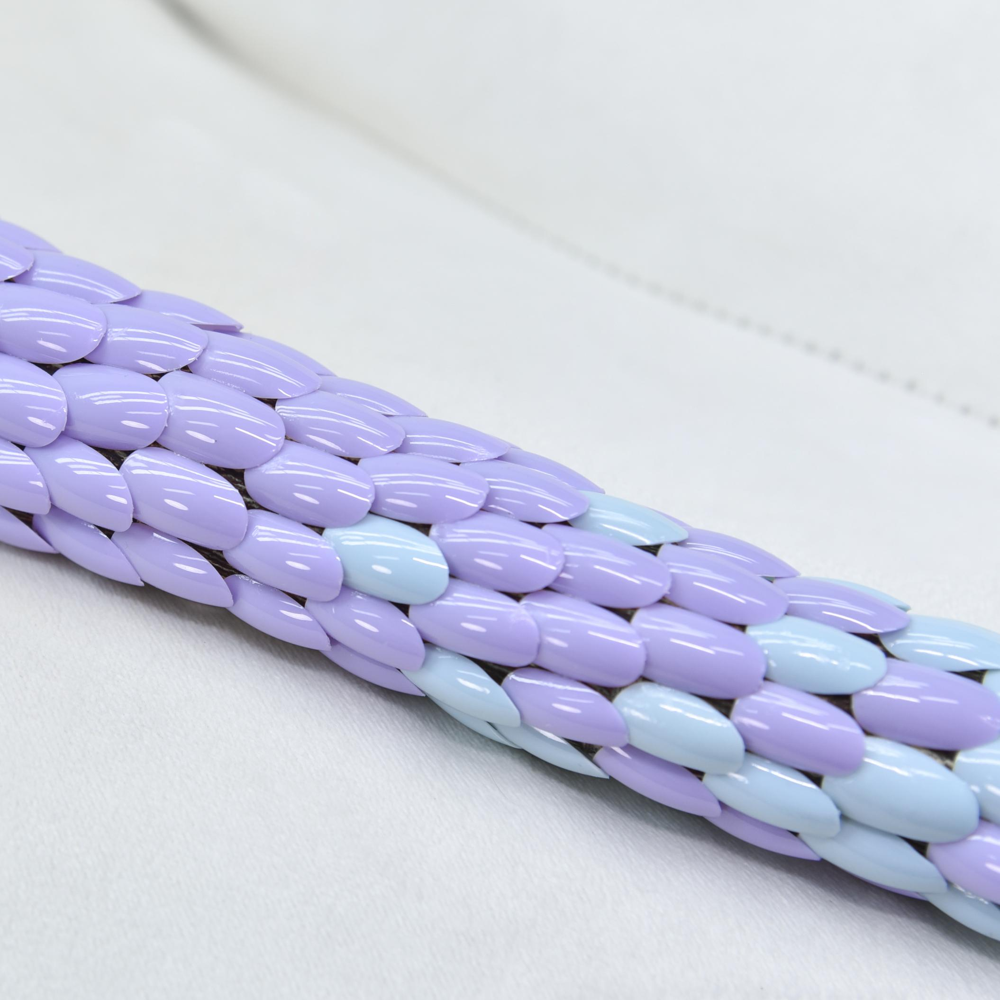
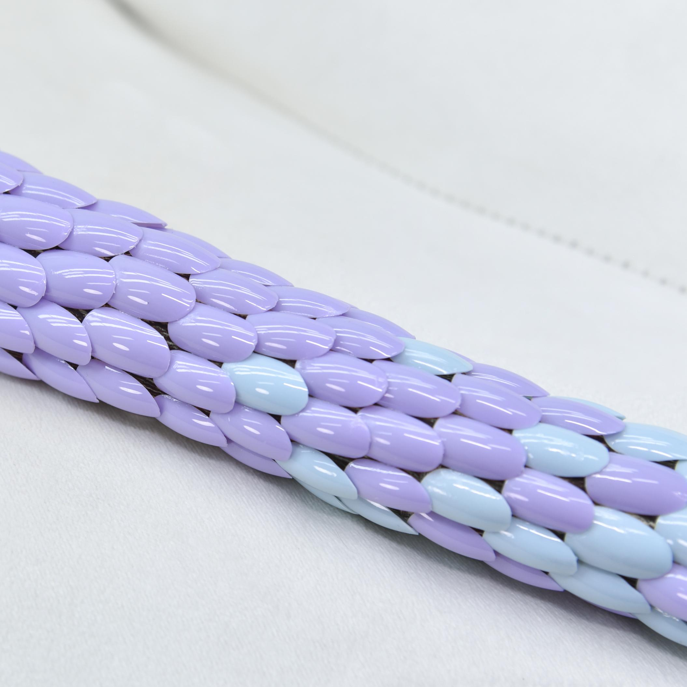
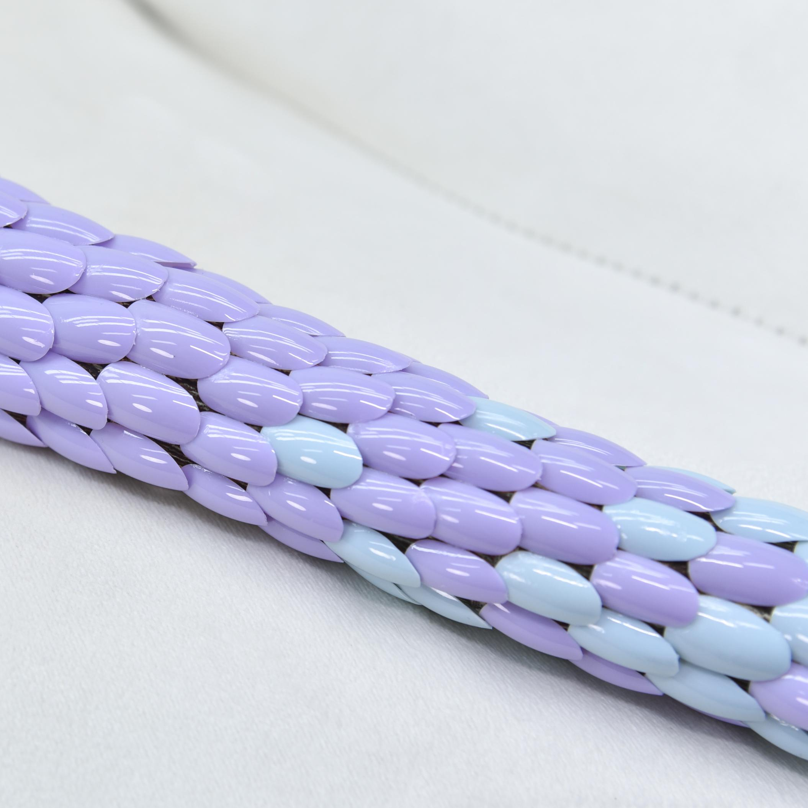

Installation
Material: nail tips, tree, sofa
Size: 138 × 110 × 90 cm
Time: 2022

作品阐释：“Staff of Snakes” carries my reflection on my preference for trees. I often incorporate trees into my work due to a childhood dependence on them. Influenced by childhood dependence on trees and talking trees in fairy tales, when I confront challenges, it's almost instinctive to seek answers from the forest. It's as if we inherently turn to our roots, finding a narrative path in the forest. Joseph Beuys also states that the tree serves as a medium for regeneration, as it has the power to heal the injuries and pains endured by itself and the land it covers. The tree is seen as a carrier of time as a force, just as nails are also manifestation of life and time. "Staff of Snakes" features a curved tree trunk wrapped in nail tips that gradate from blue to pink. The Rod of Asclepius, also known as the Staff of Snakes, is a staff entwined with a snake. It’s a symbol of medicine in Europe today and a commemoration of the ancient Greek god of healing, Asclepius. The symbolism of the snake lies in its annual molting, traditionally representing a process of renewal. The Tree of Life is the central symbol of the ancient Egyptian belief in the concept of resurrection. Continuing my ongoing exploration of trees and nail tips in my artworks, I have observed that the accumulated layers of nail tips are similar to snake skins. When placed on a curved tree trunk, it gives rise to a completely new and unfamiliar life form. The theme of interspecies communication remains a compelling artistic proposition for me.